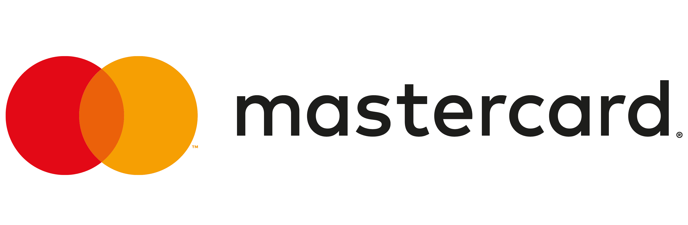

Mastercard
Software Engineering Intern | January 2023 – July 2023 | Dublin, Ireland
- Co-developed the Data Comparison Tool using Java, Spring Boot, Maven, Bitbucket, and Jenkins, automating the validation of 15,000+ test cases and significantly improving testing efficiency by 30%.
- Collaborated with cross-functional teams of 10+ engineers across development and testing units to integrate the Comparison Tool into the End-to-End System testing process.
- Performed extensive API testing with Postman across ITF and Development environments, focusing on mock test case validation, payload verification, and log analysis to replicate and resolve system errors effectively.
- Participated actively in over 10 rigorous code reviews, providing critical feedback and enhancing the maintainability, readability, and quality of project codebases.
- Conceptualised and led a three-person team during the 2023 Mastercard Intern Hackathon to design a high-fidelity prototype for a group buying application using Canva, promoting collaborative purchasing to reduce individual consumer costs.
- Volunteered alongside fellow interns to actively support fundraising initiatives for the Outhouse LGBTQ+ Centre, contributing to Mastercard’s diversity and inclusion community efforts.
Technologies Used:
Java, Spring Boot, Maven, Jenkins, Postman, Bitbucket, Agile Methodologies, Canva.
Reference
Mr. Subash Natarajan
Software Engineering Manager
Mastercard, Dublin, Ireland
Email: Subash.Natarajan@mastercard.com